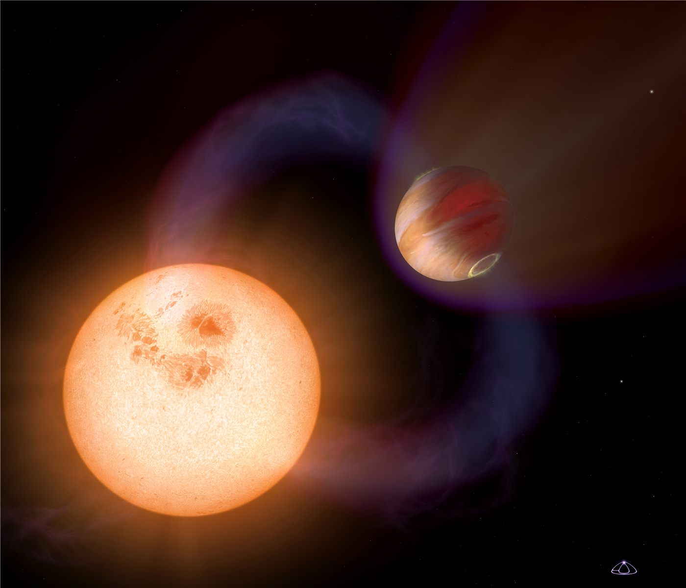

“외계 생명 단서?”… 48광년 밖 지구형 행성서 첫 대기층 발견
지구에서 약 48광년 떨어진 지구형 행성에서 대기층이 처음으로 확인됐다. 외계 생명 탐사의 중요한 단서가 될 수 있다는 기대가 나온다.
정가호 기자 · 2026.07.24
橋국제

자유시보 등은 약 48광년 거리의 지구형 외계 행성에서 대기가 처음 발견됐다고 전했다. 암석형 행성의 대기 존재는 생명 가능성을 가늠하는 핵심 조건 가운데 하나다.
광고 문의 · 300×250행성 대기의 존재와 성분은 그 행성이 생명체가 살 수 있는 환경인지를 판단하는 중요한 근거가 된다. 특히 지구와 크기·조건이 비슷한 암석 행성에서의 대기 확인은 학계의 오랜 관심사였다.
관측 기술의 발전으로 먼 거리 행성의 대기를 분석하는 일이 점차 가능해지고 있다. 이번 발견은 우주 망원경을 활용한 정밀 관측이 이룬 성과로 평가된다.
다만 대기의 발견이 곧 생명의 존재를 뜻하는 것은 아니다. 과학자들은 대기 성분에 대한 추가 분석과 장기 관측을 통해 신중하게 결론에 접근해야 한다고 강조한다.
華橋時報는 국경을 넘어 인류가 함께 던지는 근원적 질문에 주목한다. ‘우리는 우주에서 혼자인가’라는 물음은 특정 국가의 것이 아니라, 모든 인류가 공유하는 호기심의 영역임을 전한다.
출처·참고 (사실 확인용 — 본문은 직접 재작성)
· 자유시보
· 자유시보